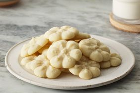

Shortbread cookies originated in Scotland and are traditionally made with butter, sugar, and flour.
Unlike other cookies, shortbread cookies don't have any leavening agents (like baking powder or baking soda).
Because of this (plus the high fat content) shortbread cookies are incredibly tender and crumbly — a
good shortbread cookie will almost melt in your mouth.
- 2 Cups butter, softened
- 1 cup White Sugar
- 2 teaspoons vanilla extract
- 4 cups All purpose flour
- Gather all ingredients.
- Preheat the oven to 350 degrees F (180 degrees C).
- Beat softened butter and sugar together in a large bowl with an electric mixer until light and fluffy.
- Stir in vanilla; add flour and mix well until combined.
- Fill cookie press with dough and form cookies onto two ungreased cookie sheets, spacing them about 1 ½
inches apart. Bake until the edges of the cookies are just starting to turn golden brown, about 10 to 12 minutes.
- Remove the cookie sheets from the oven, and set them on a wire cooling rack for a few minutes.
Then transfer the shortbread cookies to the rack to cool completely.